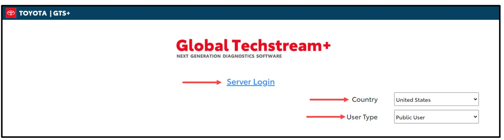
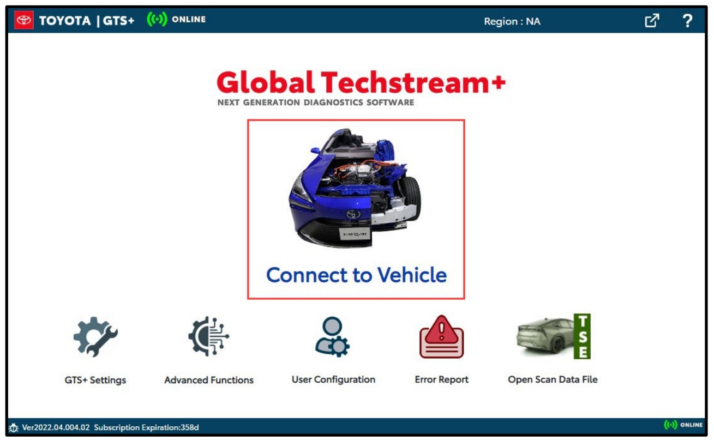
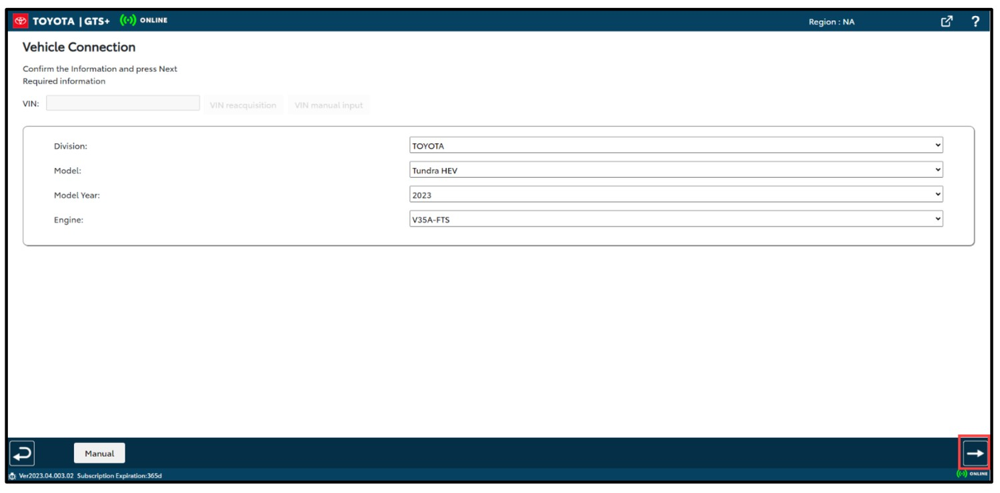
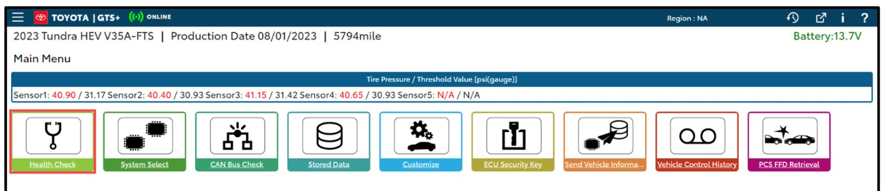
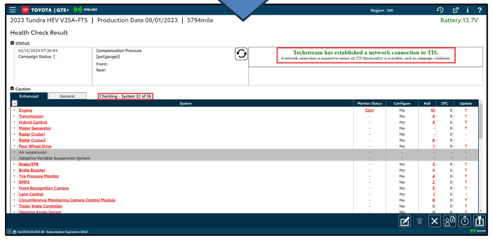
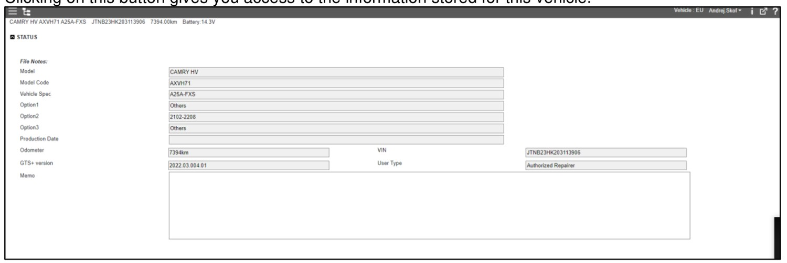
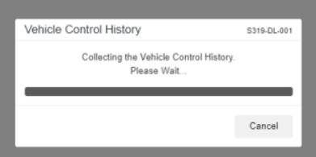
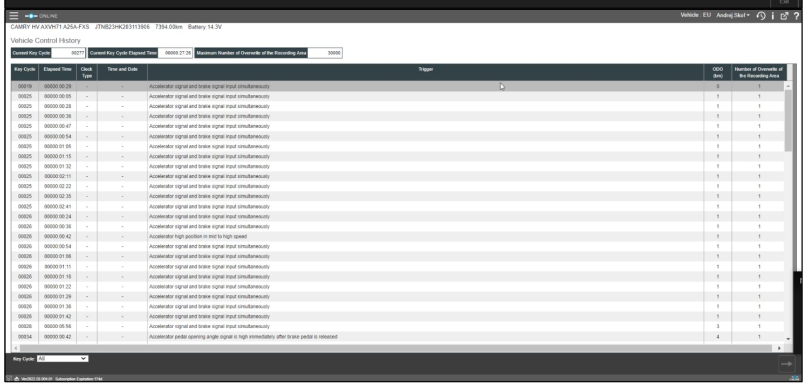

Vehicle Control History, PCS Freeze Frame Data & camera images
Field steps, at the vehicle · Rev. Sept 2026
Global Techstream+ replaced Techstream, which Toyota discontinued in September 2024.
Before you start
Confirm you have lawful authority. Some states require the owner's written consent.
Confirm the TIS subscription is active — Professional Diagnostics, not Standard.
GTS+ needs the internet. It runs in a browser and logs in to a Toyota server. Offline
works for 2 days maximum after your last online login, then it refuses to start.
Retrieve early. VCH records overwrite; every key cycle risks losing data.
Have a booster battery. GTS+ shows vehicle battery voltage in the header — watch it.
Photograph the vehicle, VIN plate, odometer and DLC. Note laptop clock vs. actual time.
Capture every screen as you go — see step 15 for how, because GTS+ printing is
unreliable.
1Check for 12 volts at the battery. Turn the ignition
ON — do not start the engine. Connect the VIM to the PC by USB and to the vehicle's
DLC3 (OBD-II) port.
Using a CDR 900 as the VIM? It still works, but you must select it in
GTS+ Settings and enter the serial number of your 900. Mongoose-Plus MFC3, MongoosePro MFC2
and MongoosePro MFC are the Toyota-supported interfaces.
2Double-click the GTSPlus desktop icon. It opens in your
default browser — use Chrome, Edge or Firefox. Set Country and User Type
(Public User), then click Server Login.

Step 2 — Country, User Type, Server Login.
3At the home screen, capture the bottom status bar — it shows
the GTS+ version, the remaining subscription time and the ONLINE indicator.

Step 3 — home screen. Version and Subscription Expiration sit in the bottom-left bar.
The subscription is a hard deadline. A retrieved
.vdas file will not open once it expires. Plan to finish the PCS Data
Viewer output while the subscription is still live.
4Open GTS+ Settings (bottom row of the home screen) and confirm
the VIM selection, dealer/workshop details and e-mail. Save with the button at the bottom right.
Capture the VIM setting.
5Click Connect to Vehicle.
6On the Vehicle Connection screen, confirm the VIN and the
Division, Model, Model Year and Engine, choose the vehicle Option, then click the arrow to
continue. Capture this screen — it is your record that the tool was on this VIN.

Step 6 — Vehicle Connection. Note VIN reacquisition and VIN manual input
beside the VIN field, and Manual at the bottom left.
Connecting manually or direct-to-module? Enter the VIN yourself using
VIN manual input. The retrieval file is named from the VIN.
7The Main Menu appears. Capture it: the header carries the
model, production date, odometer and battery voltage, and the tile row is your map for the rest of
the job.

Step 7 — Main Menu. Vehicle Control History and PCS FFD Retrieval are the
last two tiles on the right.
This is the big change from Techstream. There is no Read Data Function
button and no Stored Data tab. VCH and PCS FFD Retrieval are now top-level tiles on the Main Menu.
8Run Health Check. Let it finish scanning every system, then
capture the result — it is your ECU inventory, with RoB and DTC counts per system.

Step 8 — Health Check Result. Open Freeze Frame Details with the snowflake icon under
the FFD column on any system with DTCs.
9Open System Select, choose the SRS Airbag system, and
work the DTC screen and the Data List. Use the SAVE button at the bottom right — it
writes the details into the scan data (TSE) file. Capture both screens.
10Open Stored Data and capture it. It records the model, model
code, vehicle spec, options, production date, odometer, the GTS+ version, the VIN and your
user type — the provenance of the whole retrieval.

Step 10 — Stored Data. Put the case number in the Memo field before you capture it.
11Click the Vehicle Control History tile. GTS+ collects the
history from the airbag ECU.

Step 11 — collection in progress.
12The event table appears: key cycle, elapsed time, clock type, time
and date, trigger, odometer and overwrite count, with the current key cycle and the maximum
overwrite count across the top. Use the Key Cycle filter at the bottom to narrow it.
Capture the whole table — see step 15.

Step 12 — the VCH event table in GTS+. Pinch to zoom.
This tile gives you VCH only — no camera images. Do step 13 as well, even
if the table looks complete.
13Go back to the Main Menu and click PCS FFD Retrieval. This is
the path that pulls the Vehicle Control History and the forward-facing camera images, and
writes the .vdas retrieval file.
Work the prompts in order and capture every one:
the consent / legal notice — tick OK to continue;
the processing choice — take Read data, not the CSV option, which skips the images;
the image-category selection — check every box offered (five on TSS 2.0 and later, one
on TSS 1.0);
the estimated read time — confirm your power will last, the read can run long;
the completion summary — it names the file and reports Operation FFD, Image data and Vehicle
Control History separately. This is the most important capture of the retrieval.
Verify these prompts against the screen in front of you. The published
GTS+ documentation does not yet illustrate the PCS FFD Retrieval prompts; the sequence above is
the one Techstream used and is what practitioners report in GTS+. If a prompt differs, capture it
and follow what it says.
14Note where the file landed, from the path the completion screen
shows. Retrieval files have historically been written to
C:\Users\Public\Documents\Techstream\PCSdata\, while GTS+ keeps its own
user data in C:\Users\Public\Documents\GTSPlus\UserData\. Confirm the
actual path on the day — do not assume it.
15How to capture screens in GTS+. Toyota acknowledges printing
problems. For Health Checks and data lists, the browser's own print (Ctrl + P) works.
For DTC, Freeze Frame Data, RoB, VCH and operational history, use a full-page screenshot
browser extension such as GoFullPage, or press Prt Scn and paste into Paint
(Ctrl + V), then save.
Budget time for this. Practitioners moving from Techstream report having
to take a screenshot per timestamp where Techstream produced one file with everything in it. Plan
for it rather than discovering it at the vehicle.
16Save the scan data file for the session, then copy the
.vdas file, the scan data file and every screen capture to external
media. Open the copies and check their sizes before you disconnect.
17Work the checklist below. When everything is accounted for, exit
GTS+, disconnect the VIM from the DLC3 and switch the ignition off.
Before you leave
Every item below should be in hand. If one is not applicable, write down why
rather than leaving it blank.
1. Retrieval file .vdas
Where: the path shown on the PCS FFD Retrieval completion screen How: copy to external media — this is the evidence
2. PCS FFD Retrieval completion summary
Where: end of the PCS FFD Retrieval sequence How: screen capture — status of Operation FFD, Image data and VCH, plus the file name
3. Vehicle Control History event table
Where: Main Menu → Vehicle Control History How: full-page screen capture (GoFullPage or Prt Scn)
4. Consent notice, processing choice, image categories, estimated time
Where: the PCS FFD Retrieval prompts How: screen capture, one per prompt
5. Scan data (TSE) file for the session
Where: saved from System Select · How: save + copy to external media
Next, off the vehicle: open the .vdas file in
PCS Data Viewer — it still reads GTS+ retrievals, with the header labelled
File Information when GTS read out PCS Data. Run File → Output PCS Data for the CSV and
image output, and Print → Output for the PDF report. Do all of it
before the subscription expires.
Sources
The GTS+ screens in this guide come from Toyota's own documentation and from current
practitioner material. There was no GTS+ procedure in the case folder, so these were researched and
added to files/:
Techinfo TS Lite AM Installation Instructions v4.1, Toyota — launching GTS+, VIM
selection, Connect to Vehicle, Vehicle Connection, Main Menu and Health Check screens.
GTS+ Independent User Guide, Toyota — Stored Data and Vehicle Control History screens,
offline-mode limit, file locations.
Global Techstream Plus Known Bugs V2023.04.003.02, Toyota — the printing workarounds in
step 15.
Techinfo TS Lite AM FAQ v4.0, Toyota — subscription and support.
CDR-O October 2025 and Ruth EDR decks, already in the folder — Techstream
discontinued September 2024, the CDR 900 serial-number requirement, the VDAS-expiry warning,
and the screenshot-per-timestamp problem.
Accessing Toyota Event / Camera Data, N. Manz, Toyota Canada (WREX 2023) — VCH is stored
in the airbag ECU; PCS data paths.
Brad Muir's GTS+ User Guide for Distribution (October 2024) is referenced by the decks in
the folder but is not in it, and is only posted behind a paywall. If you can get a copy it is the
closest thing to a crash-investigation-specific GTS+ manual, and this guide should be checked
against it.